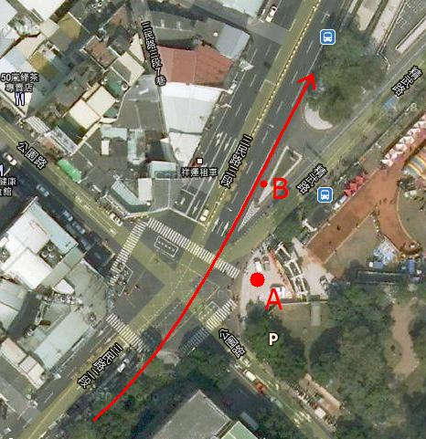

2011台中同志遊行心得
一、眼睛
大明星梁小星居然把日拋隱形眼鏡當雙週拋，而且睡覺也不拿下來。
戴隱形眼鏡是為了帥氣，用日拋是想要省錢，睡覺不拿下來是因為懶惰。但是眼睛又不像牙齒一樣有廿幾顆還可以裝假牙替代，不好好保養的話可是得不償失耶！就算堅持要隱形眼鏡，長戴型的約$2000就可戴三年以上，算起來也比日拋便宜呢。
本想為此在FB發起「一人一信讓梁小星（暫時）別戴隱形眼鏡」，也順便練習寫活動文稿，但後來覺得這種行為有點像是集體暴力，且也是「以『保護』為名地違反當事人的行動自主權」，還是先在此表達對他的行為的不諒解即可－－不然我不知道要怎麼繼續堅持BDSM的自虐權和兒少的性自主權。
二、造型
本次造型與高雄時大部份相同，是跟Seven搭檔「大紅帽與小野狼」，不過Seven這次又把七個手指甲上了紅色指甲油，但由於已十二月下半，要解讀成「聖誕老人與他的哈士奇」也似無不可。比較有趣的是遊行結束後另有二位穿全身布偶裝的狼出現，四人合照頗有娛樂效果。
三、標語
我本次用的標語是「恐同妖孽速現形；性平教育急如命」。前句用「妖孽」這個我們過往被詆毀的詞彙來指摘對方，算是針對拒絕回應的一中西門町管委會；後句不用「急急如律令」的「律」或「令」字，乃因性平教育早已是「法」，無「如律令」的必要，而在鷺江國中楊同學的命案之後，應不難理解性平教育確實與性命相關。
附論：「急急如律令」一咒其實帶有「階級重於自主權，甚至重於性命」的意涵。
不過當走到接近中友百貨時，由於路旁有許多中學生在等公車，我發現我的標語其實太過空泛而難讓對事件一無所知的路人們了解。如果以台中公園的出沒人群和一中街出沒的人群為考量的話，改用「社維修法依舊違憲，性工作權何時實現」似乎是比較容易讓觀者留下印象。
四、地點
集合與解散地點均是台中公園，由於當天該地另有天主教會台中教區50週年慶活動園遊會，以致許多與恐同教會們交手過（特別是真愛聯盟事件）的前輩們有些戒備。但當我們對對方保持距離，或是因經驗而預設對方可能有攻擊行為時，自己陷入備戰狀態的緊繃感其實不是很好受。
註：教會並非必定恐同，如同光教會與真光教會即會主動舉辦同志友善活動。
五、交管
不知道是主辦單位和警方不習慣處理遊行路權，還是警方刻意不盡職責，本次遊行隊伍在馬路上其實走的艱鉅。我個人並不太介意隊伍因紅綠燈而被切斷，但是非常在意「究竟有幾個車道的路權」這個部份。各個遊行由於交通管制與路線考量，常會有「部份路段只有一個車道，部分則有兩個車道的路權」這種事發生，是以較有經驗的警方，多會擺放交通錐，或是在路中央（而非只有路口）指揮交通。
就此而論，本次台中警方對於遊行進行的順暢度，即頗有可議。鮮少有走入馬路中的交通指揮（大多為遊行主辦單位的工作人員），而控制紅綠燈的交警也不多。儘管確實有一定比例的警察有協助讓行駛中的車輛不要入侵我們的路權，但其他警察不是在路邊眼睜睜看著隊伍因違法併排的車輛而必須走上馬路，就是拿著攝影機蒐證。我個人最在意的是本次有許多並非派出所警察或交警，而也有不少刑警穿插其中，這或許可以解讀為：台中警方對遊行隊伍不信任，而過度恐懼會有刑案發生。
另外，就政治操作的陰謀論來說，警方如果要刻意污名化某個遊行團體，也非常容易。因為只要不擺放交通錐且不指揮，一般路人就不會知道當下的路權是屬於遊行隊伍的，那麼對一般路人來說，是他在「行使路權『時』被遊行的交通組『工作人員』侵擾」，而非「行使路權『之前』，被『公權力』告知已被限制」。如果要做比方，就像是「進到餐廳坐下之後才被趕走」和「進餐廳前就被告知沒位子」給人的不爽程度。在這樣的狀況下，路人其實會對遊行隊伍不滿，而因此也對遊行的訴求有著負面情緒。（註：我並非認為本次警方或其高層有此故意，本段僅是對此制度的心得）
本次對交管問題的抱怨，一般是在進入一中街附近（三民路上，過了精武路之後）由於路旁違規停車，而致隊伍必須走上快車道，以及進入小巷（育才北街、錦新街）後必須與行走中的車輛擦身而過。但對我來說，卻是在三民路與公園路口的感受最深：

如圖（遊行路線為紅色箭頭），這個路口的設計，讓行人很難靠著三民路二段東側往北過馬路到三民路三段，本次遊行隊伍也是必須先走到A點（光復國小外操場正門），再等紅綠燈走到B點。而B點附近（在我經過時）其實並沒有什麼交管人員，以致於剛剛才為了「該怎麼過馬路」而煩惱的我（們），又因為三民路的車輛而退到了B點的人行道上。這時真情酷兒Vincent大喊：
不要走人行道！路是我們的！
我瞬間覺得非常羞愧！除了是因為我「跳上」人行道時，完全沒有注意到B點的人行道並沒有無障礙坡道可以讓Vincent的輪椅上下（而他依然用輪椅跟大家一起「走」完這充滿障礙的路線全程），更因為我明明就走在一個有合法路權的遊行隊伍中，竟然還在沒有交管的地方推定自己沒有路權，而退縮了起來－－原來我（們）已被馴化成「先委屈自己，確認不會干擾到別人，再行使正當權利」。即使「先確認別人是否受害」的心態有助於培養公德心和提醒自己不要濫用權利，但在這正是要爭取應屬於我們的權利的時刻，也正是要展現我們無須再為了傳統價值而偽裝成異性戀的當下，我「走上人行道」這種甘於屈就的行為就顯得相當諷刺。
附論：我個人認同一般道路使用者可用「路權被侵害」為由而表達對遊行行為的不滿，但鑒於遊行權是憲法上的權利，是以路人的路權並非被遊行隊伍侵害，而是被公權力所侵害。也就是說：因為他人的合法遊行而致損害者，國家應依損失補償制度（如國家有故意或過失，則依國家賠償法）給予救濟，而非受害者對遊行隊伍求償－－不過這細節究應如何判斷與實施，我未有定論。
六、旁觀
台中的遊行人潮，當然不比在首都的遊行，似乎也沒有比高雄的時候多，但我發現路人的反應卻比北高都熱情。
（一）婚紗
中區的三民路正是有名的婚紗店聚集地，而在這（現行）象徵著異性戀價值觀的店面中，卻不乏與遊行隊伍招手的友善人士們。我目睹了某街角的二樓店家整層樓近十人都走到落地窗前揮手表達善意，而又另聽說某店也在我們經過時，有兩位女子即在店中作勢親吻。
（二）公車
我目睹了三台以上的公車上有與我們揮手的民眾。其中雖有兩台是中學生，可能只是因為新奇而揮手，但我們可以知道這場遊行已經成功地被他們看見、討論、記得。而其他成年人敢在公車裡－一個被陌生人包圍的環境中－揮手對同志表達善意，也表示台中人的真實心態其實並不反對同志，而或許只是誤以為其他人都還恐同。
（三）公園
集合地點的性質，也是與北高遊行的不同之處。台中公園平常就會有人潮，所以出發前和集合後都會有圍觀的路人。我發現這些圍觀的人們都駐足了不少時間，而且有不少是中年以上的一個個路人。
另外，直到晚間六點半時都還有約兩百人以上的人潮留在聚集地，專心聽著台上的演說（當時是同志家庭權益促進會）。
（四）在地
本次的肉熊比北高都多，而且有許多並不像是北高的打扮，我想他們大多是在地人吧。不管本次在地人出席的多不多，至少應該能夠感受到「走出來並不會受到傷害」吧。